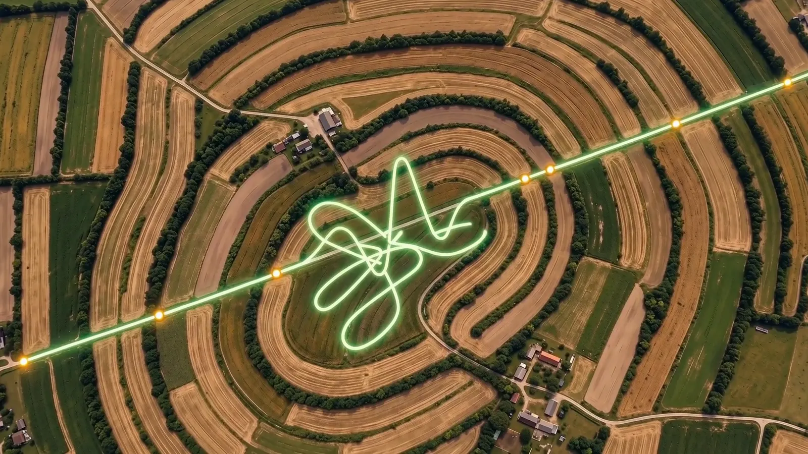

Help Farm / Investidores
Um motor já desenhado, um mercado que já paga por animal e por hectare.
A Help Farm roda sobre o motor RAPP, desenvolvido pela Moulin para manutenção preditiva industrial. O primeiro mercado é o Paraguai, onde o grupo já tem empresa e operação; o Brasil vem em seguida, para escala.
Quem já paga por monitoramento hoje.
Receita recorrente por unidade monitorada.
O modelo segue o que deu certo no setor — cobrar por animal, hectare ou máquina, com o equipamento dentro da assinatura — e evita o que quebrou empresas: áreas gratuitas em massa e venda de dado genérico.
Implantação
Taxa única por fazenda: medição completa pela unidade móvel, instalação dos sensores e calibração da assinatura.
Assinatura por unidade
Mensal por cabeça, por vaca, por hectare ou por máquina, com o equipamento em comodato e contrato de 36 meses.
Cooperativas
Licença anual para cooperativas, laticínios e tradings levarem a Help Farm aos associados.
Temporada de campo
A unidade móvel fica na fazenda durante plantio, colheita ou estação de monta, com a dupla de profissionais a bordo.
Risco para bancos e seguradoras
Índice de condição da fazenda e do rebanho para crédito rural e seguro agrícola.
Como a Help Farm gera receita
51 s
- O produtor paga a implantação e a assinatura por hectare, cabeça ou máquina
- Ao redor da fazenda vivem 12 entidades que dependem da saúde dela
- Bancos, seguradoras e compradores pagam por dado confiável da fazenda
- A certificação de origem gera receita por lote e por tonelada
O material completo da rodada, com acesso por código.
Pesquisa de mercado em 16 países, modelo de rentabilidade por abrangência, kit da unidade móvel, o filme e os vídeos explicativos. O acesso é restrito a quem tem interesse em investir.

Paraguai prova, Brasil escala.
Piloto no Paraguai
Cinco fazendas com a unidade móvel e uma cooperativa parceira: provar um alerta antecipado documentado em cada frente.
Brasil e Cone Sul
Leite e gado de corte primeiro, com a rastreabilidade obrigatória; depois grãos. Seguradoras e bancos entram com o produto de risco.
Mercados maduros
Estados Unidos, Oceania e Europa com parceiro local, como camada preditiva sobre dados de equipamentos já instalados.
Pesquisa de mercado em 16 países, modelo por abrangência e cenários de rodada disponíveis mediante solicitação. Números de preço e custo da Help Farm são premissas em validação.